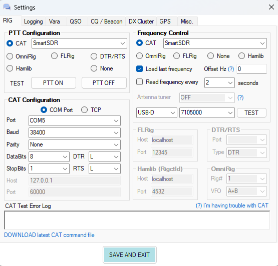
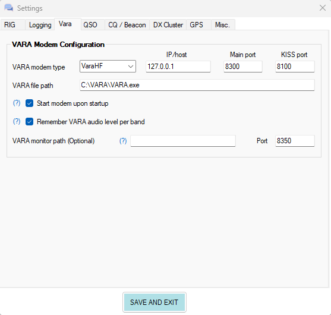
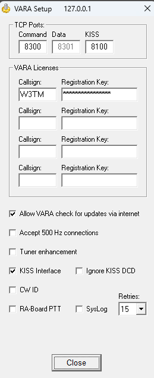
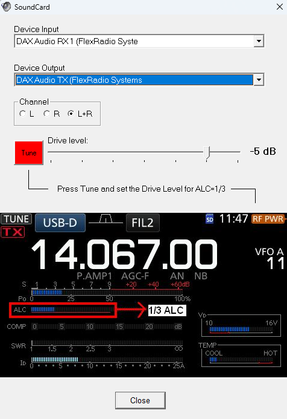
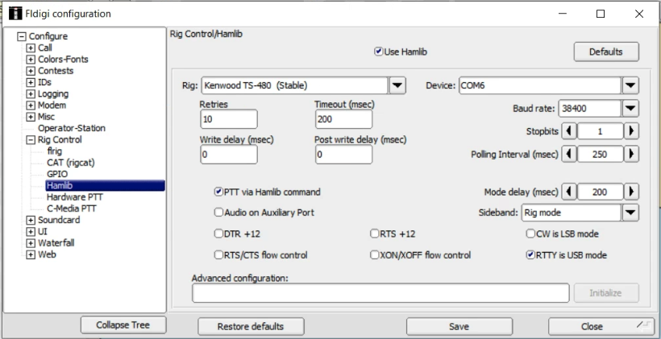

[1] TRUEFlex-6400
This chapter describes some specific steps used with the Flex 6400.
Manuals
Setup
Load the software database.
VarAC
Hardware
PC
- Beelink Windows 11
Antenna
- Comet antenna mounted externally
- Connected via coax patch panel
Software
The packages used with VarAC are as follows:
| package | version |
|---|---|
| VARA HF | 4.8.7 |
| VarAC | 9.2.3 |
Package settings
Here are screenshots of settings for VarAC.


Here are the settings for VARA HF:


Operating
- Select Global Profile “Shack digital 45W”
- This disables AGC and any RX or TX filters
- The mode is DIGU
Digital modes
fldigi (remote via Chrome Remote Desktop)
- From Kasa, power-up the Alinco power supply and the Flex radio.
- Connnect to the Acer PC via Chrome Remote Desktop
- Start SmartSDR v3.7.3
- Select Profiles/Global/Shack-fldigi
The rig should switch to the appropriate mode (DIGU) and the PaNBEMS Sunday morning net frequency (3.583 MHz).
Confirm that the current slice has DAX selected and that the SmartSDR DAX panel shows audio from that slice.
Open fldigi (v4.2.03)
fldigi should open to 3.583 MHz and show signals in the waterfall.
Tip
fldigi uses Hamlib for rig control. Here are the key settings under Configure/Rig Control/Hamlib:

You may need to manually set the mode, such as to THOR22.
- To shut down:
- Close fldigi
- Close/quit SmartSDR
- Close Chrome Remote Desktop
- From Kasa:
- Turn off FlexRadio
- Turn off Acer monitor
- Wait 10s
- Turn off Alinco power supply (also grounds antennas)